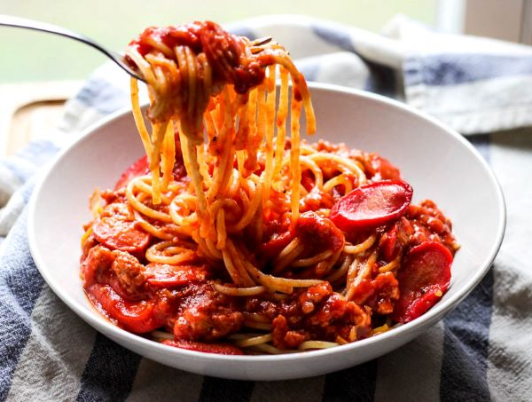

Home
About
Categories
Contact
Filipino Style Spagetti

Ingredients
2 lbs. Spaghetti noodles
1 lb. ground pork
6 ounces luncheon meat minced
4 pieces hotdogs or beef franks
35 ounces Filipino Style Spaghetti Sauce
1/2 cup shredded cheddar cheese
1 1/2 cups beef broth
1 medium onion minced
1 teaspoon minced garlic
Salt and pepper to taste
3 tablespoons cooking oil
Procedures
Cook the Spaghetti noodles according to package instructions. Once cooked, transfer to a bowl. Set aside.
Heat the oil in a Pan.
Saute the onion and garlic.
Once the onions becomes soft, add the ground pork. Cook until the color turns light brown.
Add the luncheon meat and hotdog. Stir and cook for 2 to 3 minutes.
Pour-in the Spaghetti sauce and beef broth. Stir and let boil. Cover and simmer for 30 minutes.
Try to taste the sauce and add salt and pepper if needed.
Pour the Filipino Style Spaghetti sauce over the Spaghetti. Top with shredded cheese.
Serve. Share and enjoy!
About Us
Kyle Angelo Beltran